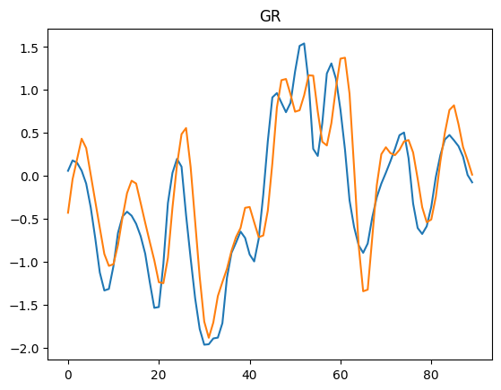
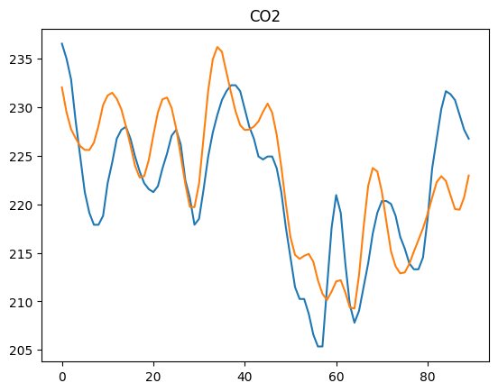
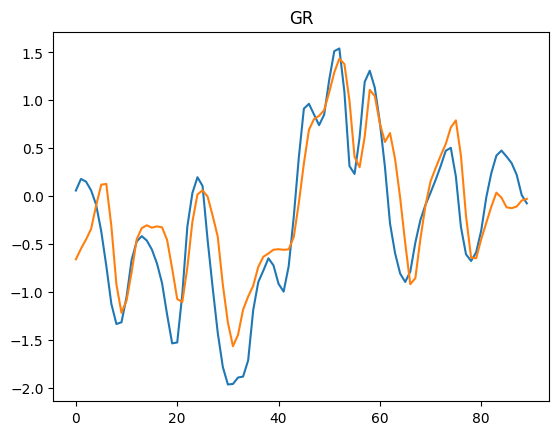
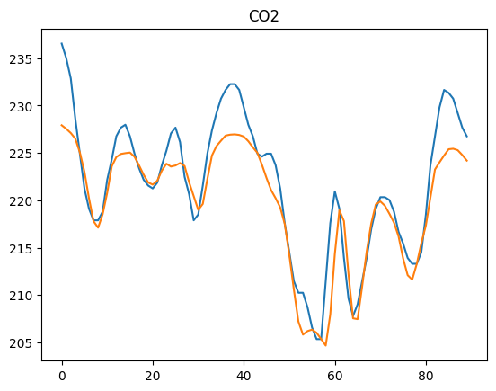

import torch
import torch.nn as nn
import torch.optim as optim
import numpy as np
import pandas as pd
import matplotlib.pyplot as plt
from torch.utils.data import Dataset, DataLoader
df = pd.read_csv('https://raw.githubusercontent.com/vhrique/anne_ptbr/refs/heads/main/data/box-jenkins-gas-furnace.txt')
df_train = df.iloc[:-100]
df_test = df.iloc[-100:]
df_mean = df_train.mean()
df_std = df_train.std()
df_train_norm = (df_train - df_mean) / df_std
df_test_norm = (df_test - df_mean) / df_std
class TimeSeriesDataset(Dataset):
def __init__(self, dataframe, sequence_length=10):
self.data = dataframe.values
self.sequence_length = sequence_length
def __len__(self):
return len(self.data) - self.sequence_length
def __getitem__(self, idx):
x = self.data[idx:idx+self.sequence_length, :]
y = self.data[idx+self.sequence_length, :]
return torch.tensor(x, dtype=torch.float32), torch.tensor(y, dtype=torch.float32)
sequence_length = 10
train_dataset = TimeSeriesDataset(df_train, sequence_length)
train_loader = DataLoader(train_dataset, batch_size=32, shuffle=True)
test_dataset = TimeSeriesDataset(df_test, sequence_length)
test_loader = DataLoader(test_dataset, batch_size=32, shuffle=False)
def train_model(model, dataloader, criterion, optimizer, num_epochs=10):
model.train() # Set the model to training mode
for epoch in range(num_epochs):
running_loss = 0.0
for batch_x, batch_y in dataloader:
# Zero the parameter gradients
optimizer.zero_grad()
# Forward pass
outputs = model(batch_x)
# Compute the loss
loss = criterion(outputs, batch_y)
# Backward pass and optimization
loss.backward()
optimizer.step()
# Accumulate the loss for reporting
running_loss += loss.item() * batch_x.size(0)
epoch_loss = running_loss / len(dataloader.dataset)
if (epoch+1) % 10 == 0:
print(f'Epoch [{epoch+1}/{num_epochs}], Loss: {epoch_loss:.4f}')
print('Finished Training')
def evaluate_model(model, dataloader, criterion):
model.eval() # Set the model to evaluation mode
eval_loss = 0.0
all_outputs = []
all_labels = []
with torch.no_grad(): # Disable gradient computation during evaluation
for batch_x, batch_y in dataloader:
# Forward pass
outputs = model(batch_x)
# Compute the loss
loss = criterion(outputs, batch_y)
# Accumulate the loss
eval_loss += loss.item() * batch_x.size(0)
all_outputs.extend(outputs.detach().tolist())
all_labels.extend(batch_y.tolist())
avg_loss = eval_loss / len(dataloader.dataset)
print(f'Evaluation Loss: {avg_loss:.4f}')
all_outputs = np.array(all_outputs)
all_labels = np.array(all_labels)
return all_outputs, all_labels
class TimeSeriesMLP(nn.Module):
def __init__(self, input_size, hidden_size, output_size):
super(TimeSeriesMLP, self).__init__()
self.flatten = nn.Flatten()
self.fc1 = nn.Linear(input_size, hidden_size)
self.relu = nn.ReLU()
self.fc2 = nn.Linear(hidden_size, output_size)
def forward(self, x):
x = self.flatten(x)
x = self.fc1(x)
x = self.relu(x)
x = self.fc2(x)
return x
num_features = df_train.shape[1]
input_size = sequence_length * num_features
hidden_size = 64
output_size = num_features
model = TimeSeriesMLP(input_size=input_size, hidden_size=hidden_size, output_size=output_size)
criterion = nn.MSELoss()
optimizer = optim.Adam(model.parameters(), lr=0.001)
num_epochs = 200
train_model(model, train_loader, criterion, optimizer, num_epochs)
all_outputs, all_labels = evaluate_model(model, test_loader, criterion)
Epoch [10/200], Loss: 8.5263
Epoch [20/200], Loss: 3.5799
Epoch [30/200], Loss: 3.0291
Epoch [40/200], Loss: 2.5829
Epoch [50/200], Loss: 2.2374
Epoch [60/200], Loss: 1.9398
Epoch [70/200], Loss: 1.6916
Epoch [80/200], Loss: 1.5445
Epoch [90/200], Loss: 1.3464
Epoch [100/200], Loss: 1.2310
Epoch [110/200], Loss: 1.1310
Epoch [120/200], Loss: 1.0278
Epoch [130/200], Loss: 0.9562
Epoch [140/200], Loss: 0.8940
Epoch [150/200], Loss: 0.8461
Epoch [160/200], Loss: 0.8088
Epoch [170/200], Loss: 0.7839
Epoch [180/200], Loss: 0.7302
Epoch [190/200], Loss: 0.7110
Epoch [200/200], Loss: 0.6793
Finished Training
Evaluation Loss: 1.5189
outputs = all_outputs * df_std.to_numpy() + df_mean.to_numpy()
labels = all_labels * df_std.to_numpy() + df_mean.to_numpy()
for i in range(2):
plt.plot(labels[:,i])
plt.plot(outputs[:,i])
plt.title(df_std.index[i])
plt.show()


class TimeSeriesLSTM(nn.Module):
def __init__(self, input_size, hidden_size, output_size, num_layers=1):
super(TimeSeriesLSTM, self).__init__()
self.hidden_size = hidden_size
self.num_layers = num_layers
self.lstm = nn.LSTM(input_size, hidden_size, num_layers, batch_first=True)
self.fc = nn.Linear(hidden_size, output_size)
def forward(self, x):
# Initialize hidden state and cell state (h0, c0)
h0 = torch.zeros(self.num_layers, x.size(0), self.hidden_size).to(x.device)
c0 = torch.zeros(self.num_layers, x.size(0), self.hidden_size).to(x.device)
# Forward propagate through LSTM
out, _ = self.lstm(x, (h0, c0))
# Take only the last output for the fully connected layer
out = self.fc(out[:, -1, :])
return out
hidden_size = 64
output_size = num_features
num_layers = 1
model = TimeSeriesLSTM(input_size=num_features, hidden_size=hidden_size, output_size=output_size, num_layers=num_layers)
criterion = nn.MSELoss()
optimizer = optim.Adam(model.parameters(), lr=0.01)
num_epochs = 200
train_model(model, train_loader, criterion, optimizer, num_epochs)
all_outputs, all_labels = evaluate_model(model, test_loader, criterion)
Epoch [10/200], Loss: 364.3975
Epoch [20/200], Loss: 41.7310
Epoch [30/200], Loss: 6.6758
Epoch [40/200], Loss: 5.4967
Epoch [50/200], Loss: 5.5133
Epoch [60/200], Loss: 5.4899
Epoch [70/200], Loss: 5.4878
Epoch [80/200], Loss: 5.4754
Epoch [90/200], Loss: 5.4887
Epoch [100/200], Loss: 5.4724
Epoch [110/200], Loss: 3.7402
Epoch [120/200], Loss: 2.2687
Epoch [130/200], Loss: 1.4654
Epoch [140/200], Loss: 1.1905
Epoch [150/200], Loss: 0.8976
Epoch [160/200], Loss: 0.8136
Epoch [170/200], Loss: 0.6126
Epoch [180/200], Loss: 0.5036
Epoch [190/200], Loss: 0.4383
Epoch [200/200], Loss: 0.3375
Finished Training
Evaluation Loss: 0.6248
outputs = all_outputs * df_std.to_numpy() + df_mean.to_numpy()
labels = all_labels * df_std.to_numpy() + df_mean.to_numpy()
for i in range(2):
plt.plot(labels[:,i])
plt.plot(outputs[:,i])
plt.title(df_std.index[i])
plt.show()

